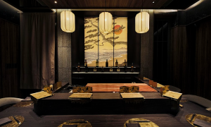
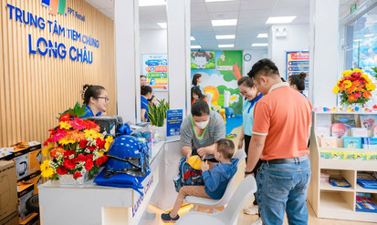

Thời Sự Góc Nhìn Thế Giới Video Podcasts Kinh doanh Bất động sản Khoa học Giải trí Thể thao Pháp Luật Giáo dục Sức Khỏe Đời sống Du lịch Số hóa Xe Ý kiến Tâm sự
Food tour ở chợ Phú Yên với 100.000 đồng
Với 100.000 đồng, du khách có thể thưởng thức từ 6 đến 7 món đặc sản trong chợ Tuy Hòa như cơm gà, bánh hỏi.
Chợ Tuy Hòa nằm trên đường Trần Hưng Đạo, phường 4, là chợ trung tâm của tỉnh Phú Yên và nổi tiếng với du khách bởi các món ăn địa phương giá rẻ, từ 5.000 đồng.
Food tour chợ do phóng viên VnExpress và Hoài Thương - thổ địa Tuy Hòa - trải nghiệm cuối tháng 8 gợi ý.
Chè Truyền Thống
Các loại chè truyền thống ở Phú Yên được bán trong chợ với giá 5.000 đồng mỗi cốc, đa dạng lựa chọn như chè chuối, chè bắp, chè mít đác hay sâm bổ lượng. Cốc chè đầy đặn, nguyên liệu đều từ trái cây tươi nên được du khách yêu thích.
Du khách tới Phú Yên nên thử chè chuối và bắp nếu ưa ngọt. Những người thích vị thanh, giải khát ngày hè có thể chọn chè mít đác hoặc sâm bổ lượng.
Chè được vào bịch sẵn cho khách đem về.Ảnh Tú Nguyễn
Hàng chè thường bán kèm flan, gọi theo đĩa hai bánh, giá 10.000 đồng. Bánh flan nhà làm, ngậy mùi trứng, khi ăn chủ quán sẽ đổ thêm hai thìa cà phê đen giảm bớt vị ngọt. Hương cà phê kết hợp với nước cốt dừa béo ngậy là đặc trưng của những quán flan ở Phú Yên.
Một phần flan trong chợ Tuy Hòa. Ảnh: Tú Nguyễn
Bánh canh hẹ
Những bát bánh canh đầy lá hẹ là đặc trưng của Phú Yên và duyên hải Nam Trung bộ, có thể tìm thấy ở mọi nơi trong thành phố. Một phần bánh canh với 6-7 miếng chả cá chiên có giá 25.000 đồng, đủ làm no bụng người có sức ăn yếu. Chả cá làm từ nhiều loại như cá cờ, cá mối, cá nhồng, tùy theo mùa biển. Sau khi giã nhuyễn thịt cá, người bán thêm một số loại gia vị như tiêu rồi chia nhỏ thành từng miếng, đem chiên lên.

Một bát bánh canh hẹ trong chợ. Ảnh:Tú Nguyễn
Sợi bánh canh làm từ bột gạo hoặc bột lọc. Bột lọc ăn dai hơn còn sợi bột gạo to, trắng và mềm hơn. Nước dùng bánh canh là nước ninh xương heo, khi ăn, du khách nên cho thêm ớt, mắm ruốc và chanh để có trải nghiệm tốt nhất. Theo người bán, hầu hết hàng ăn trong chợ đều tự làm chả, sợi bánh nên giá thành rẻ, nguyên liệu tươi ngon.
Cơm gà
Cơm gà cũng là món tạo nên thương hiệu ẩm thực Phú Yên. Du khách có thể tìm thấy một số quán cơm gà nổi tiếng hơn trong thành phố nhưng trải nghiệm trong chợ không thua kém.

Phần cơm gồm đùi gà, dưa chuột, hành tím, nước mắm ớt tỏi và nước luộc gà thêm tiêu, lá rau răm. Ảnh:Tú Nguyễn
Một đĩa cơm gà trong chợ có giá 25.000 đồng, gồm cơm, đùi gà và một bát canh ăn kèm. Hạt cơm dẻo, mang màu vàng của ráng mỡ nhờ được nấu với nước luộc gà. Thịt gà chắc, ngọt, ngon hơn hẳn khi chấm cùng nước mắm tỏi ớt đặc trưng. Người Phú Yên khi ăn cơm gà thường cắn thêm trái ớt tươi hoặc tỏi nhưng kiểu ăn này có thể không hợp với nhiều du khách phương xa.
Bánh tai vạc, bánh bèo và bánh hỏi
Ba loại bánh này thường được bán trong cùng một quầy, du khách có thể gọi cùng lúc để thưởng thức, giá 10.000 đồng mỗi đĩa.

>Một đĩa bánh bèo (bên trên) và bánh hỏi ( bên dưới), được phủ ruốc tôm, mỡ hành bên trên. Ảnh:Tú Nguyễn
Bánh bèo làm từ bột gạo, được hấp chín và thường bán theo chén nhưng ở chợ thường bán theo đĩa, kèm bánh hỏi. Khi ăn, du khách tự chan nước mắm chua ngọt theo khẩu vị. Mỗi đĩa bánh lại kèm theo ruốc tôm.

Một âu bánh tai vạc được rưới nước mỡ hành. Ảnh:Tú Nguyễn
Bánh cuốn nem nướng
Bánh cuốn nem nướng ở Phú Yên có hai loại, một loại ăn kèm với nem nướng Ninh Hòa, Nha Trang; loại khác ăn kèm nem nướng kiểu Tuy Hòa. Nem Ninh Hòa thường được xiên que, nướng trên bếp than còn nem Tuy Hòa nướng theo tảng to, khi bán mới cắt miếng nhỏ ra. Cả hai loại đều làm từ thịt heo, tẩm gia vị và mềm như chả, không phải giòn kiểu nem Hà Nội.

Một phần bánh cuốn với nem kiểu Tuy Hòa. Ảnh:Tú Nguyễn
Một chiếc bánh cuốn dài khoảng hơn 10 cm, bên trong có nem nướng, bánh đa giòn rụm, rau sống, dưa chuột và được người bán cuộn chặt bằng miếng bánh tráng dày bên ngoài. Khi ăn, du khách chấm kèm nước mắm ớt chua ngọt, rắc đậu phộng giã nhỏ. Mỗi cuốn có giá 10.000 đồng.

|
Cẩm nang du lịch Phú yên Không chỉ có Gành Đá Đĩa, nhà thờ Mằng Lăng, hải đăng Đại Lãnh hay cầu gỗ Ông Cọp, Phú Yên còn có rất nhiều nơi khám phá mới. |
|
48 giờ ở Phú Yên Phú Yên là điểm đến nổi tiếng ở miền Trung với nhiều cảnh đẹp và đồ ăn ngon, chi phí thấp. |
|
|
Khám Phá Vực Phun Ở Phú Yên Vực Phun nằm lọt trong dãy núi Đá Đen, giữa rừng cây và đồi núi trập trùng, nước trong xanh, hút nhiều khách du lịch mạo hiểm đến chèo SUP. |
|

|
6 món ăn vặt thưởng thức tại bãi biển Phú Yên Cá ồ nướng, gỏi sứa, gà hấp rượu... là những món ăn vặt mang hương vị riêng, du khách nên thử sau khi tắm biển Đông Tác, ở phía nam TP Tuy Hòa. |

|
Kinh nghiệm food tour tại điểm đến mới Khi đến bất kỳ nơi nào, điều đầu tiên cây viết chuyên về du lịch người Mỹ Megan duBois lựa chọn là đặt tour khám phá ẩm thực địa phương. |
Cùng chuyên mục
 |
Bánh Trung thu của các nước châu Á Songpyeon của Hàn Quốc, Tsukimi Dango của Nhật Bản hay bánh Đoàn viên của Trung Quốc là những món bánh truyền thống người dân các nước ăn trong dịp Trung thu. |
|  |
Yuzu Omakase kỷ niệm một năm ra mắt tại Việt Nam Nhà hàng Yuzu Omakase nằm gần chợ Bến Thành là điểm đến quen thuộc của nhiều thực khách sành ăn yêu thích ẩm thực Nhật Bản. |
 |
Quán cà phê trang trí hơn 500 đồ gốm hút khách ở TP HCM Lối vào, kệ tường, bàn, đèn trong quán cà phê ở quận 1 đều được trang trí đồ gốm, mang phong cách Nhật Bản, thu hút hàng trăm khách đến check in mỗi ngày. |
 |
Mặt trái của chính sách miễn visa hút khách tại Đông Nam Á Khi Singapore, Malaysia nới lỏng chính sách visa để khách đến dễ dàng hơn, mối lo ngại về tình hình an ninh, tội phạm cũng bắt đầu xuất hiện. |
|  |
Long Châu hỗ trợ tiêm vaccine sởi miễn phí cho trẻ 1-10 tuổi Tiêm vaccine sởi miễn phí tại Long Châu ở TP HCM giúp bảo vệ con bạn khỏi bệnh nguy hiểm. |
- Trang Chủ
- Video
- Podcasts
- Ảnh
- Infographics
- Mới Nhất
- Xem nhiều
- Tin nóng